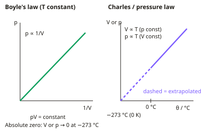

A-level Physics Year 13 · Topic 27
Gases and kinetic theory
Gases and kinetic theory links what we measure about a gas, like pressure and temperature, to the motion of its molecules.
We will use the gas laws and the ideal gas equation, and carry out practicals to test them and estimate absolute zero.
Then we derive pressure from molecular collisions and connect temperature to molecular kinetic energy.
- 5 subtopics
- 288 questions
- Free: 27.1 notes and 9 questions
In this topic
- 27.1Boyle's law, Charles's law and the pressure lawFree below · 58 questions
- 27.2Practical: Boyle's law and pressure law, estimating absolute zeroOpen in Full Marks · 61 questions
- 27.3The ideal gas equation: moles, Avogadro constant and Boltzmann constantOpen in Full Marks · 51 questions
- 27.4Kinetic theory of gases: assumptions, pV = ⅓Nm⟨c²⟩ and r.m.s. speedOpen in Full Marks · 57 questions
- 27.5Molecular kinetic energy and temperature; Brownian motionOpen in Full Marks · 61 questions
27.1 · Free notes
Boyle's law, Charles's law and the pressure law

Key points
- Boyle's law: for a fixed mass of gas at constant temperature, pressure is inversely proportional to volume, so pV = constant (p₁V₁ = p₂V₂).
- On a p–V graph a constant-temperature curve is a hyperbola (an isotherm). A graph of p against 1/V is a straight line through the origin. Isotherms for higher temperatures lie further from the axes.
- Charles's law: for a fixed mass of gas at constant pressure, volume is directly proportional to the absolute (kelvin) temperature, so V/T = constant (V₁/T₁ = V₂/T₂).
- Pressure law: for a fixed mass of gas at constant volume, pressure is directly proportional to absolute temperature, so p/T = constant (p₁/T₁ = p₂/T₂).
- Temperature must be in kelvin for these proportionalities: T/K = θ/°C + 273 (more precisely 273.15). A change of 1 K equals a change of 1 °C, but doubling θ in °C does not double the pressure or volume.
- Absolute zero is 0 K = −273 °C. Extrapolating a V–θ or p–θ graph back to V = 0 or p = 0 gives about −273 °C. The line must be extrapolated because real gases liquefy before reaching this temperature.
- The three laws combine into p₁V₁/T₁ = p₂V₂/T₂ for a fixed mass of gas. Pressure and volume units cancel, but T must always be in kelvin.
- Kinetic explanation: compressing a gas at constant T means molecules hit the walls more often, so pressure rises. Heating at constant V means faster molecules collide harder and more often, so pressure rises.
- An ideal gas obeys all these laws at every pressure and temperature. Real gases behave nearly ideally at low pressure and high temperature (well above their boiling point).
- Exam tips: always state the conditions ('fixed mass', 'constant temperature'). Convert °C to K. Convert volumes to m³ (1 cm³ = 10⁻⁶ m³, 1 dm³ = 10⁻³ m³) if you go on to use pV = nRT.
In more detail
- Worked Boyle's law: 200 cm³ at 100 kPa squeezed to 50 cm³ at constant temperature → p = 100 × 200 ÷ 50 = 400 kPa.
- Worked Charles's law: 2.0 L at 27 °C (300 K) heated to 127 °C (400 K) at constant pressure → V = 2.0 × 400 ÷ 300 = 2.7 L.
- Worked pressure law: a tyre at 220 kPa and 7 °C (280 K) warms to 35 °C (308 K) → p = 220 × 308 ÷ 280 = 242 kPa.
- Worked combined: 1.0 m³ at 100 kPa and 300 K becomes 0.50 m³ at 450 K → p = 100 × (1.0 ÷ 0.50) × (450 ÷ 300) = 300 kPa.
Practice
Boyle's law, Charles's law and the pressure law: 9 questions
Pick an answer to check it, or open the answer for the explanation.
1. A fixed mass of gas at 100 kPa and 600 cm³ is compressed slowly to 150 cm³ at constant temperature. What is the new pressure?
- 400 kPa
- 600 kPa
- 25 kPa
- 200 kPa
Show answer
A: 400 kPa. p₁V₁ = p₂V₂, so p₂ = 100 × 600 / 150 = 400 kPa. The volume falls by a factor of 4, so the pressure rises by a factor of 4.
2. 250 cm³ of gas at 300 K is heated to 360 K at constant pressure. What is the final volume?
- 350 cm³
- 310 cm³
- 300 cm³
- 208 cm³
Show answer
C: 300 cm³. V₂ = V₁T₂/T₁ = 250 × 360/300 = 300 cm³. Volume is proportional to kelvin temperature.
3. A sealed rigid vessel holds gas at 2.0×10⁵ Pa and 27 °C. It is heated to 87 °C. What is the new pressure?
- 6.4×10⁵ Pa
- 2.6×10⁵ Pa
- 1.7×10⁵ Pa
- 2.4×10⁵ Pa
Show answer
D: 2.4×10⁵ Pa. Convert to kelvin: 300 K to 360 K. p₂ = 2.0×10⁵ × 360/300 = 2.4×10⁵ Pa. Using °C gives the wrong answer of 6.4×10⁵ Pa.
4. Why is absolute zero estimated by extrapolating a graph rather than measured directly with a gas?
- Gas molecules disappear at low temperature
- Thermometers cannot read below 0 °C
- Gas pressure becomes negative below 0 °C
- Real gases liquefy before reaching it, so ideal behaviour fails
Show answer
D: Real gases liquefy before reaching it, so ideal behaviour fails. Real gases condense to liquids at low temperature and stop obeying the gas laws. The straight-line graph can only be extended back to p = 0 or V = 0 by extrapolation.
5. Which statement about the kelvin scale is correct?
- Raising 10 °C to 20 °C doubles the kelvin temperature
- −273 K is absolute zero
- 0 K is the freezing point of water
- A change of 1 K equals a change of 1 °C
Show answer
D: A change of 1 K equals a change of 1 °C. The kelvin and Celsius degrees are the same size. Absolute zero is 0 K (−273 °C), and 10 °C to 20 °C is 283 K to 293 K, which is not a doubling.
6. At constant pressure a student records 40 cm³ of gas at 20 °C and 48 cm³ at 80 °C. Extrapolating linearly, at what temperature does V = 0?
- −300 °C
- −240 °C
- −260 °C
- −280 °C
Show answer
D: −280 °C. Gradient = 8/60 = 0.133 cm³ per °C. The volume falls by 40 cm³ below 20 °C after 40/0.133 = 300 °C, giving 20 − 300 = −280 °C.
7. A fixed mass of gas at 27 °C and constant pressure has its volume doubled. What is its new temperature?
- 300 °C
- 600 °C
- 327 °C
- 54 °C
Show answer
C: 327 °C. V ∝ T in kelvin. 27 °C = 300 K, so doubling V gives 600 K, which is 327 °C. Doubling the Celsius value (54 °C) is a common mistake.
8. 2.0 m³ of gas at 100 kPa and 280 K is compressed to 1.0 m³ and heated to 300 K. What is the final pressure?
- 187 kPa
- 214 kPa
- 200 kPa
- 107 kPa
Show answer
B: 214 kPa. p₂ = p₁V₁T₂/(V₂T₁) = 100 × 2.0 × 300/(1.0 × 280) = 214 kPa. This is 200 kPa from the volume change, scaled by 300/280 for the temperature.
9. A gas at constant temperature gives these (p/kPa, V/cm³) readings: (100, 48), (150, 32), (200, 24), (250, 20). Which reading is anomalous?
- 100 kPa
- 250 kPa
- 150 kPa
- 200 kPa
Show answer
B: 250 kPa. pV is 4800 for the first three readings but 5000 for the 250 kPa reading. By Boyle's law the volume should have been 19.2 cm³.
Keep going in Full Marks
Full Marks has 58 questions on Boyle's law, Charles's law and the pressure law (49 more than here), set out in practice levels. You also get notes and 3D models for all 5 subtopics of Gases and kinetic theory, plus games, timed exams and past papers.